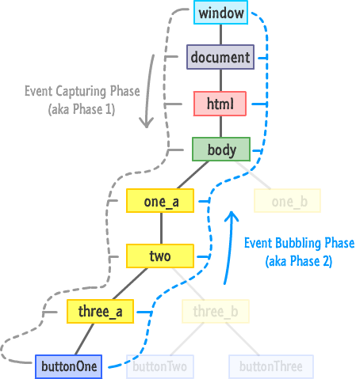

Phase de capture vs phase d'ébullition
En javascript il y'a deux moments ou l'on peut intercepter un évènement:
- la phase de capture : où l'on execute d'abord les parents (les éléments les plus profonds)
- la phase de bubbling : où l'on execute d'abord les enfants (les éléments les plus proches de nous)
